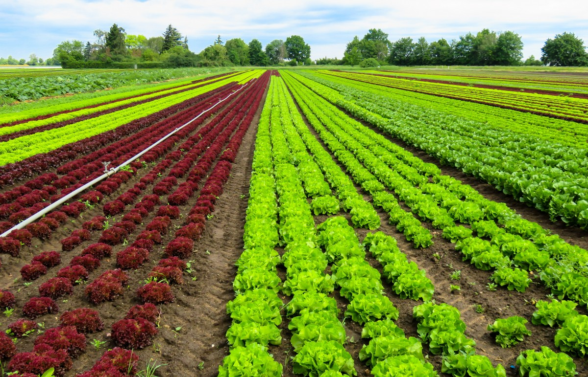
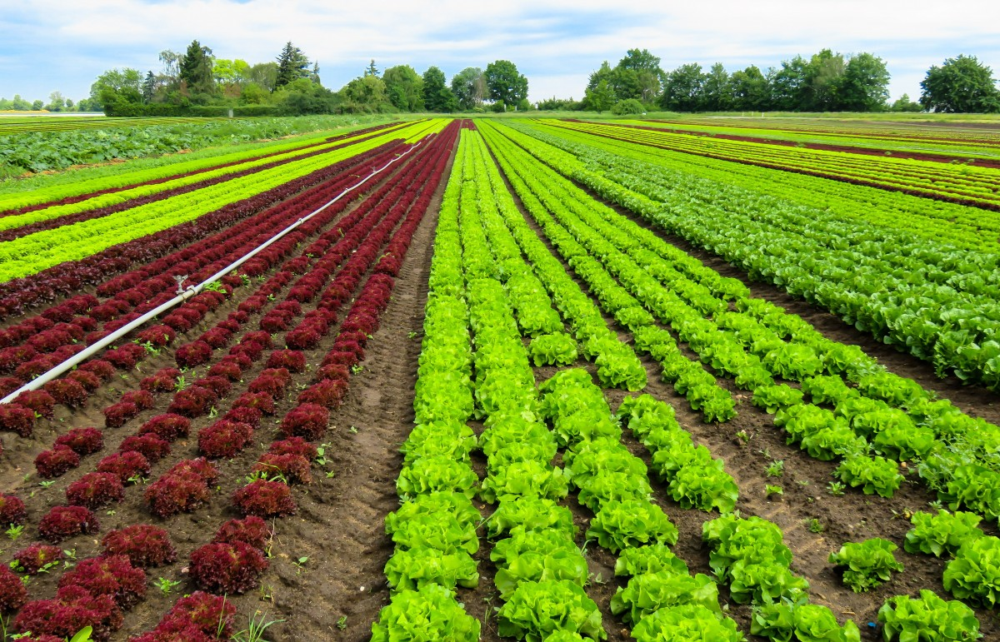

Por medio de las hojas, las plantas realizan la fotosíntesis, respiran y producen los alimentos. La respiración se produce durante el día y la noche; para ello, las plantas toman el oxígeno del aire y desprenden dióxido de carbono.
Biología: las plantas son organismos mayormente fotosintéticos sin capacidad locomotora, aunque sí de movimiento. Sus paredes celulares se componen principalmente de celulosa.
 
